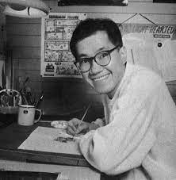

Akira Toriyama

Akira Toriyama was raised by his parents in Kiyosu, Aichi Prefecture, and also has an older sister,[6] who has at least two children.[4][7] He spent his childhood and much of his formative years in Kiyosu, what was then a largely rural area just outside Nagoya. Since an early age, he had a passion for drawing and was influenced by the productions of the time (Disney movies including One Hundred and One Dalmations and Osamu Tezuka's Astro Boy). However, after his primary school years, his interest in comics and cartoons dwindled, and his attention shifted to live-action movies such as Westerns, war films, and science fiction. Toriyama entered a technical high school in Nagoya to study design, which allowed him to focus on drawing. Against the wishes of his parents, after his last high school year, Toriyama decided not to continue his studies at university and began his working life. He had his first job at 20 years old as an in-house graphic designer at a small advertising firm in Nagoya. He resigned two and a half years later, largely because he resented the workaday routine.